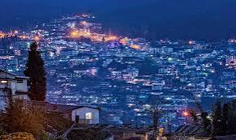
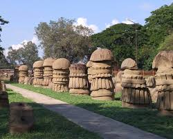
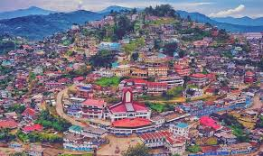
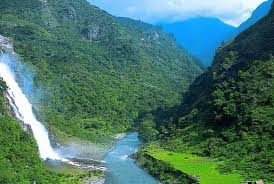
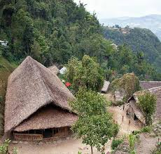
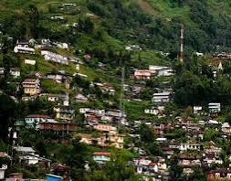
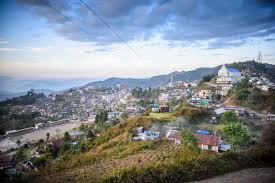
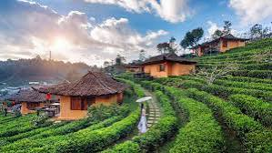
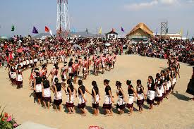
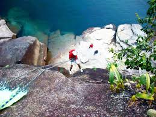

Kohima

War Cemetery
Commemorates soldiers of the World War II Battle of Kohima.
Kohima State Museum
Exhibits on Naga tribal history, culture, and artifacts.
Dzükou Valley
Famous for its trekking trails and seasonal flowers.
Kohima Zoo
Wildlife sanctuary showcasing indigenous flora and fauna.
Dimapur

Kachari Ruins
Ancient ruins of the Kachari kingdom.
Rangapahar Reserve Forest
Wildlife sanctuary with diverse bird species.
Mokokchung

Longkhum
Scenic village offering panoramic views of the surroundings.
Changtongya
Known for its orange orchards and natural beauty.
Tuensang

Chilise
Hilltop offering views of the Tuensang town.
Lungwa Village
Known for its remote location and traditional tribal culture.
Mon

Longwa Village
Traditional Konyak Naga village with a unique geographical location straddling the India-Myanmar border.
Veda Peak
Highest peak in Nagaland, offering panoramic views.
Wokha

Doyang River
Famous for the annual Amur Falcon migration.
Mount Tiyi
Sacred mountain of the Lotha Naga tribe.
Pfutsero

Pfutsero Town
Known for its pleasant climate and scenic beauty.
Pfutsero Peak
Trekking destination offering panoramic views.
Other Attractions

Satoi Range
Biodiversity hotspot with diverse flora and fauna.
Shilloi Lake
Natural lake surrounded by picturesque landscapes.
Festivals and Cultural Events

Hornbill Festival
Celebrates Naga tribal culture with traditional dance, music, and crafts.
Moatsu Festival
Ao Naga festival marking the completion of sowing season with feasting and traditional rituals.
Adventure and Nature Activities

Trekking and Hiking
Numerous trails in the hills and valleys of Nagaland.
Birdwatching
Opportunities to spot unique bird species, especially during the Amur Falcon migration season.